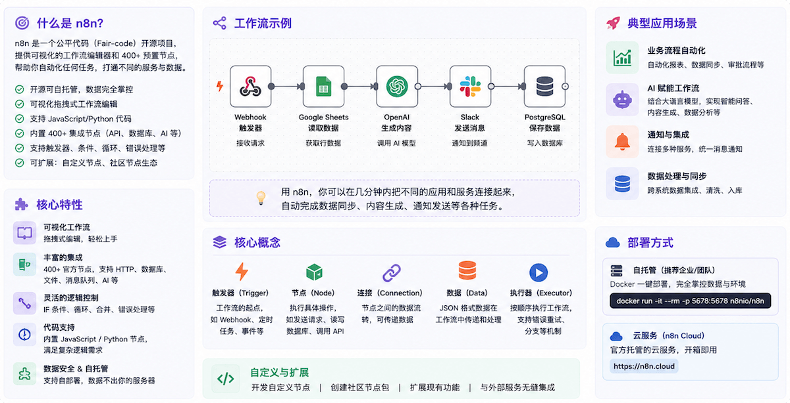

n8n入門チュートリアル
n8n（「n-eight-n」と読み、「nodemation」を意味します）は、現在最も技術チームに支持されているオープンソースのワークフロー自動化プラットフォームです。
n8nの最大の強みは、ビジュアルキャンバス + ネイティブコードサポート + 完全セルフホストです。非開発者でもドラッグ＆ドロップで構築でき、開発者は任意のノードでJavaScriptやPythonを書くことができます。さらに、自分のサーバーで実行でき、データはローカルに保持されます。
n8nはワークフロー自動化プラットフォームであり、AIを安全かつ制御可能な形で業務やプロセスに統合することができます。
n8nは、ビジュアルな構築体験とコード能力を組み合わせています。ワークフローのどこでもJavaScriptやPythonを書くことができ、各ステップの入力と出力の横で結果を即座に確認できます。

Difyとn8nの違い
Difyとは異なり、n8nの中心は汎用自動化とシステム統合であり、AIはその中の強力なコンポーネントの1つです。一方、Difyの中心はAIアプリケーション開発であり、自動化は補助的な機能です。
簡単に言うと：
- 複数のSaaSシステムを接続し、データをシステム間で流通させる必要がある場合：n8nが最適です
- AI会話を中心としたアプリケーション（カスタマーサービスのボット、RAG Q&A）を構築する必要がある場合：Difyが最適です
誰に適しているか
n8nのビジュアルインターフェースにより、非開発者でもワークフローを素早く設計・テストできます。複雑性が増すにつれて、開発者はFunctionノード、外部スクリプト、またはカスタム統合を使用して拡張できます。
これにより、チームは構造・検証・制御を段階的に追加できます。
最も典型的なユーザー層：
| ユーザー層 | 典型的なシナリオ |
|---|---|
| 運用チーム | CRM更新、レポート生成、メール送信の自動化 |
| 開発者 | API統合、データパイプライン、社内ツールの自動化 |
| データエンジニア | ETLパイプライン、データクレンジング、定期同期 |
| ITチーム | 監視アラート、インシデント対応、ユーザー管理 |
| テックスタートアップ | MVPを迅速に構築するためのバックエンド自動化レイヤー |
中核概念
学習を始める前に、これらの中心となる概念を理解しましょう。
ワークフロー（Workflow）
ワークフローは一連のノードからなる有向グラフであり、「Xが発生したらYを実行し、次にZを実行する」というロジックを定義します。
ワークフローにはアクティブ（Active）と非アクティブ（Inactive）の2つの状態があります。アクティブ時はトリガーに応答して自動実行され、非アクティブ時はテスト用に手動実行のみ可能です。
ノード（Node）
ワークフローの基本的な構成要素であり、各ノードは1つの具体的な操作を実行します：
| ノードタイプ | 色 | 説明 |
|---|---|---|
| トリガーノード | オレンジ | ワークフローの起点。トリガーのタイミングを定義します |
| 通常ノード | 青 | データ処理、API呼び出し、ロジックの実行 |
| AI関連ノード | 紫 | LLM呼び出し、ベクトルストア、エージェント |
実行（Execution）
ワークフローの1回の完全な実行を「実行」と呼びます。
n8nの実行課金方式は、1回の実行＝ワークフローを1回実行することであり、ステップ数や処理データ量は関係ありません。
接続（Connection）
ノード間の矢印で、データの流れと実行順序を定義します。1つのノードは複数の出力を持つことができ、分岐ロジックを実現できます。
クレデンシャル（Credential）
APIキー、OAuthトークン、データベースパスワードなどの機密情報を保存する安全なコンテナです。
クレデンシャルは暗号化して保存され、複数のワークフローで共有できます。ワークフローJSON内に平文で公開されることはありません。
エクスプレッション（Expression）
n8nの動的値構文で、二重波括弧で囲みます：{{ $json.fieldName }}。
ノードパラメータで固定値ではなく上流ノードの出力を参照できるようにします。
インストールと起動
5つのインストール方法があり、ローカルでの迅速な試用からエンタープライズ向けの高可用性デプロイまで対応します。
方法1：ローカルですぐに試す（最速、5分）
npxまたはグローバルインストールを使用します。追加設定は不要です。
# 使用 npx，无需安装（需要 Node.js 18+） npx n8n # 或全局安装 npm install -g n8n n8n start
ブラウザで http://localhost:5678 にアクセスし、アカウント登録を完了すればすぐに使用できます。

メールアドレスまたはパスワードを忘れた場合は、次のコマンドを使用してnpx n8n user-management:resetリセットしてください。
方法2：Dockerシングルコンテナ（個人・小規模チーム向け）
1コマンドで起動し、データはローカルディレクトリに永続化されます。
# 创建数据持久化目录 mkdir -p ~/.n8n # 启动 n8n 容器 docker run -d \ --name n8n \ -p 5678:5678 \ -v ~/.n8n:/home/node/.n8n \ -e N8N_ENCRYPTION_KEY="your-random-32-char-secret-key" \ docker.n8n.io/n8nio/n8n:latest
http://localhost:5678 にアクセスしてセットアップを完了します。
方法3：Docker Compose + PostgreSQL（本番環境向け）
本番環境に適しており、データは PostgreSQL に保存され、より安定した並行アクセスをサポートします。
docker-compose.yml を作成：
version: "3.8"
services:
postgres:
image: postgres:16-alpine
restart: always
environment:
POSTGRES_DB: n8n
POSTGRES_USER: n8n
POSTGRES_PASSWORD: ${POSTGRES_PASSWORD}
volumes:
- postgres_data:/var/lib/postgresql/data
healthcheck:
test: ["CMD-SHELL", "pg_isready -U n8n"]
interval: 10s
timeout: 5s
retries: 5
n8n:
image: docker.n8n.io/n8nio/n8n:latest
restart: always
ports:
- "5678:5678"
environment:
# 数据库连接配置
DB_TYPE: postgresdb
DB_POSTGRESDB_HOST: postgres
DB_POSTGRESDB_DATABASE: n8n
DB_POSTGRESDB_USER: n8n
DB_POSTGRESDB_PASSWORD: ${POSTGRES_PASSWORD}
# 安全配置
N8N_ENCRYPTION_KEY: ${N8N_ENCRYPTION_KEY}
N8N_SECURE_COOKIE: "false" # 如果没有 HTTPS，设为 false
# 访问地址（替换为你的实际域名）
WEBHOOK_URL: https://your-domain.com
N8N_EDITOR_BASE_URL: https://your-domain.com
# 时区设置
GENERIC_TIMEZONE: Asia/Shanghai
TZ: Asia/Shanghai
volumes:
- n8n_data:/home/node/.n8n
depends_on:
postgres:
condition: service_healthy
volumes:
postgres_data:
n8n_data:
.env ファイルを作成：
POSTGRES_PASSWORD=your-strong-postgres-password N8N_ENCRYPTION_KEY=your-32-char-random-encryption-key
安全な暗号化キーを生成：
# 生成 24 字节的 base64 随机密钥 openssl rand -base64 24
サービスを起動：
# 后台启动所有服务 docker compose up -d # 查看日志，等待启动完成 docker compose logs -f n8n
方法4：リバースプロキシの設定（Nginx + HTTPS）
本番デプロイでは、ドメインと HTTPS の設定が容易になるよう Nginx の設定を推奨します。
server {
listen 80;
server_name n8n.yourdomain.com;
return 301 https://$host$request_uri;
}
server {
listen 443 ssl;
server_name n8n.yourdomain.com;
# SSL 证书路径（使用 Let's Encrypt 自动签发）
ssl_certificate /etc/letsencrypt/live/n8n.yourdomain.com/fullchain.pem;
ssl_certificate_key /etc/letsencrypt/live/n8n.yourdomain.com/privkey.pem;
# n8n WebSocket 支持
location / {
proxy_pass http://localhost:5678;
proxy_http_version 1.1;
proxy_set_header Upgrade $http_upgrade;
proxy_set_header Connection "upgrade";
proxy_set_header Host $host;
proxy_set_header X-Real-IP $remote_addr;
proxy_read_timeout 300s;
proxy_send_timeout 300s;
}
# MCP SSE 端点专项配置
location ~* ^/mcp {
proxy_pass http://localhost:5678;
proxy_buffering off;
gzip off;
chunked_transfer_encoding off;
proxy_set_header Connection "";
}
}
SSL証明書（Let's Encrypt）を取得：
# 自动配置 Nginx 并申请 SSL 证书 certbot --nginx -d n8n.yourdomain.com
方法5：Kubernetes（高可用性、エンタープライズ向け）
高可用性が必要なチームは、公式 Helm Chart を使用してください。
# 添加 n8n Helm 仓库 helm repo add n8n https://n8n-helm-chart.netlify.app # 安装 n8n，启用 PostgreSQL 和 Redis helm install n8n n8n/n8n \ --set n8n.encryption_key="your-key" \ --set postgresql.enabled=true \ --set redis.enabled=true # 队列模式需要 Redis
高可用性アーキテクチャでは「キューモード」（Queue Mode）の設定が必要です。Redis をメッセージキューとして使用し、複数の Worker ノードでタスクを並列処理できるようにします。
システム要件
ユースケース別のハードウェア推奨：
| シナリオ | CPU | メモリ | ディスク |
|---|---|---|---|
| 開発・テスト | 1コア | 1 GB | 10 GB |
| 小規模チーム本番 | 2コア | 4 GB | 20 GB |
| 中程度の負荷 | 4コア | 8 GB | 50 GB |
データベース推奨：n8n はデフォルトで SQLite を使用しますが、本番環境では PostgreSQL を強く推奨します。PostgreSQL はパフォーマンスが優れ、並行アクセスをサポートし、バックアップも容易です。
画面ガイド：n8nを初めて開くとき
n8n の主要なインターフェース領域を理解して、すぐに操作を始めましょう。

左側のナビゲーションバー
| アイコン/領域 | 機能 |
|---|---|
| ワークフロー一覧 | ワークフローの表示・検索・作成 |
| 実行履歴 | 全ワークフローの実行記録を表示 |
| 認証情報 | API キー、OAuth などの機密情報を管理 |
| 変数 | グローバル変数（Team/Business 機能） |
| 設定 | インスタンス設定、ユーザー管理 |
API の設定が可能です。例えば DeepSeek の場合、New Chat メニューをクリックし、左上のモデルをクリックして、ドロップダウンリストから DeepSeek を選択します：

次に API キーを設定します：

設定が成功したら、左上のモデルをクリックし、ドロップダウンリストから DeepSeek のモデルを選択します：

これでチャットを開始できます：

ワークフローキャンバス
キャンバス操作のショートカット：
| 操作 | ショートカット/方法 |
|---|---|
| ノードを追加 | + ボタンをクリックして、2つのノードの間に追加 |
| ノードを検索 | Ctrl+K でクイック検索・追加 |
| キャンバスを移動 | 空白領域をドラッグ |
| キャンバスのズーム | マウスホイール |
| 全ノードを選択 | Ctrl+A |
| ノードを削除 | Delete キーで選択したノードを削除 |
ノードパネル
任意のノードをクリックして設定パネルを開きます。3つのタブに分かれています：
| タブ | 機能 |
|---|---|
| Parameters（パラメータ） | ノードの主要設定 |
| Settings（設定） | 実行制御（リトライ、タイムアウト、エラーハンドリング） |
| Notes（メモ） | ノードに説明テキストを追加 |
上部ツールバー
| ボタン | 機能 |
|---|---|
| Execute Workflow（実行） | 手動で1回実行をトリガー |
| Save（保存） | 現在の編集内容を保存 |
| Active スイッチ | ワークフローを有効化/無効化 |
最初のワークフローを構築する
完全な例で学習：毎朝8時に Hacker News の人気記事を自動取得し、整形して Slack チャンネルに送信します。
ステップ1：ワークフローを作成
左側で Workflows を選択し、New Workflow（新規ワークフロー）をクリックして、「HN 早报」に名前を変更します。
ステップ2：スケジュールトリガーを追加
+ ボタンをクリックして「Schedule」を検索し、Schedule Trigger を選択します。
設定の説明：
Trigger Rule：0 8 * * 1-5（周一到周五早上 8 点） 或使用界面选择器：Hour → 8，Weekday → Mon to Fri
ステップ3：HNデータを取得
Schedule Trigger の右側にある + をクリックし、「HTTP Request」を検索してノードを追加します。
設定：
Method：GET URL：https://hacker-news.firebaseio.com/v0/topstories.json
これにより、現在の人気記事のID配列（最大500個）が返されます。
ステップ4：先頭5件に制限する
Code ノードを追加し、JavaScript を記述します：
例
const topIds = $input.first().json.slice(0, 5);
return topIds.map(id => ({ json: { id } }));
ステップ5：各記事の詳細を並列取得する
HTTP Request ノードを追加します。
n8n は上流からの各データに対して自動的に並列実行するため、手動でループを書く必要はありません。
設定：
URL：https://hacker-news.firebaseio.com/v0/item/{{ $json.id }}.json
ステップ6：メッセージを整形する
Code ノードを追加：
例
// 遍历所有文章，格式化为 Slack 消息格式
const formatted = items.map(item => {
const { title, url, score, by } = item.json;
return `• *${title}*\n 分数: ${score} |作者: ${by}\n ${url || '(无链接)'}`;
}).join('\n\n');
// 返回组装好的消息
return [{ json: { message: `*Hacker News 今日热门*\n\n${formatted}` } }];
ステップ7：Slackに送信する
Slack ノードを追加します（先に Slack 認証情報の設定を完了してください。認証情報管理の章を参照）。
設定：
Resource：Message
Operation：Send
Channel：#general（或你的目标频道）
Message：{{ $json.message }}
ステップ8：テスト実行する
上部の Execute Workflow ボタンをクリックし、各ノードの横に表示される数字（処理されたデータ件数を表します）を確認します。
任意のノードをクリックすると、その入力データと出力データを確認できます。
ステップ9：ワークフローを有効化する
テストが成功したら、右上の Active スイッチをクリックします。ワークフローがアクティブ状態になり、毎営業日の朝8時に自動実行されます。
よく使うノードの詳しい解説
最も一般的なノードタイプを習得します。トリガー、データ処理、データベースの3つのカテゴリをカバーします。
トリガーノード
トリガーはワークフローの起点であり、いつ実行を開始するかを定義します。
| ノード | トリガー方法 | 典型的なシナリオ |
|---|---|---|
| Schedule Trigger | スケジュール（cron 式） | 日次レポート、定期同期 |
| Webhook | HTTP リクエストトリガー | Stripe/GitHub イベントを受信 |
| Chat Trigger | AI 会話メッセージ | AI Agent ワークフローを駆動 |
| Email Trigger (IMAP) | 新しいメールの到着 | メールリクエストの処理 |
| Slack Trigger | Slack イベント | Slash コマンドに応答 |
データ処理ノード
HTTP Request（最も中心的なノード）
ほぼすべての REST API を呼び出せます：
Method: POST
URL: https://api.example.com/endpoint
Authentication: Header Auth（配合凭证使用）
Body Content Type: JSON
Body: {
"key": "{{ $json.value }}"
}
自動ページネーションをサポートしているため、ループロジックを書かずに全データを取得できます。
Code（JavaScript / Python）
JavaScript の例：
例
for (const item of $input.all()) {
// 为每条数据添加处理时间戳
item.json.processedAt = new Date().toISOString();
}
return $input.all();
Python の例：
例
for item in _input.all():
item.json["processed"] = True
return _input.all()
Set（変数設定）
コードを書かずに、フィールドを視覚的に設定・変更・削除できます。
字段名: fullName
值: {{ $json.firstName + " " + $json.lastName }}
IF（条件分岐）
条件に基づいてデータを異なるブランチにルーティングします：
条件: {{ $json.status }} == "active"
True 分支 → 处理活跃用户
False 分支 → 处理非活跃用户
Switch（マルチブランチ）
IF に似ていますが、複数の条件をサポートします（switch-case と同様）。データを異なる処理パスに振り分けます。
Loop Over Items（ループ）
配列内の各要素を一つずつ処理します。速度を制御する必要があり、並列処理が適さないシナリオに適しています。
Merge（マージ）
複数のブランチのデータをまとめて結合します。Append、Keep Key Matches、Combine By Position などの戦略をサポートします。
Wait（待機/Human-in-the-Loop）
ワークフローの実行を一時停止し、以下の条件が満たされるまで待機してから続行します：
- 一定時間後に自動的に続行
- Webhook コールバックを受信した後に続行（Human-in-the-Loop の核心）
- 特定のフォームが送信された後に続行
Respond to Webhook（Webhook への応答）
Webhook を受信するワークフローで、リクエスト元に同期的に応答を返します。
データベースノード
| ノード | サポートされている操作 |
|---|---|
| PostgreSQL | Select / Insert / Update / Delete / Execute Query |
| MySQL | Select / Insert / Update / Delete / Execute Query |
| MongoDB | Find / Insert / Update / Delete / Aggregate |
| Redis | Get / Set / Delete / Incr / Expire |
| Supabase | REST または PostgreSQL ノード経由 |
クレデンシャル管理：外部サービスへの安全な接続
認証情報は、n8n ですべての認証情報を管理する統一メカニズムであり、すべての認証情報は N8N_ENCRYPTION_KEY で暗号化されてデータベースに保存されます。
チームは認証情報を共有できますが、実際のシークレットの内容は確認できません。
クレデンシャルの追加
認証情報を追加するには2つの方法があります：
- 左側のナビゲーションで Credentials（認証情報）を選択し、Add Credential（認証情報の追加）をクリック
- ノード設定で認証情報ドロップダウンをクリックし、Create new credential（新規認証情報の作成）を選択
一般的なクレデンシャル設定
Slack（OAuth）
- アクセスapi.slack.com/appsアプリを作成
- Bot Token Scopes（chat:write、channels:read）を有効化
- アプリをワークスペースにインストールし、Bot Token（xoxb- で始まる）をコピー
- n8n で Slack を選択し、Bot Token を貼り付け
GitHub（Personal Access Token）
- GitHub で Settings を選択し、Developer settings に移動し、Personal access tokens を選択して、Generate new token をクリック
- 必要な権限（repo、issues など）を選択
- Token をコピーし、n8n で GitHub 認証情報を追加
OpenAI / Anthropic（API Key）
- 各プロバイダーのコンソールから API Key を取得
- n8n で Credentials を選択し、「OpenAI」または「Anthropic」を検索して、Key を貼り付け
汎用 HTTP Header（任意の API）
n8n に専用ノードがないサービスには、HTTP Request ノードと Header Auth 認証情報を組み合わせて使用します：
Header Name: Authorization Header Value: Bearer your-api-key-here
AIエージェントノード：ワークフローに考えさせる
n8n のネイティブ AI Agent ノードを使用すると、大規模言語モデルを活用して意思決定、自然言語処理、多段階の推論を実行する、インテリジェントな自律ワークフローを構築できます。
AIエージェントノードの構成
AI Agent ノードは「クラスターノード」であり、3種類のサブノードで構成されています：
AI Agent（根节点）
├── Chat Model（必需）：驱动 Agent 的 LLM
│ ├── OpenAI Chat Model
│ ├── Anthropic Chat Model
│ └── Google Gemini Chat Model
├── Memory（可选）：让 Agent 记住对话历史
│ ├── Simple Memory（会话内记忆）
│ ├── Window Buffer Memory（固定窗口）
│ └── Postgres/Redis Chat Memory（跨会话持久化）
└── Tools（可选）：Agent 可以调用的工具
├── 内置工具（Calculator、SerpAPI、Wikipedia）
├── HTTP Request Tool（调用任意 API）
├── n8n Workflow Tool（调用另一个工作流）
└── MCP Client Tool（调用 MCP 服务器）
AIエージェントの設定
ステップ1：AI Agent ノードを追加します。
ワークフローキャンバスで AI Agent を検索し、Tools Agent（最も汎用的な Agent タイプ）を選択します。
ステップ2：Chat Model を追加します。
AI Agent ノードの下部にある Chat Model スロットをクリックし、Anthropic Chat Model を追加します。
設定：
Model：claude-sonnet-4-6 凭证：选择已配置的 Anthropic 凭证
ステップ3：System Prompt を設定します。
你是一个数据分析助手，帮助用户分析 {{ $json.company_name }} 公司的销售数据。
可用工具：
- 查询数据库获取历史销售数据
- 搜索互联网获取市场信息
- 计算器用于数学运算
回答要简洁、数据驱动。如果数据不足，明确说明需要哪些额外信息。
ステップ4：ツールを追加します。
Add Tool をクリックして、必要なツールノードを追加します。
各ツールには、ツール名（Agent がいつ呼び出すかを判断するために使用）とツールの説明（Agent にこのツールで何ができるかを伝える）を設定する必要があります。
エージェントタイプの選択
| Agent タイプ | 適したシナリオ |
|---|---|
| Tools Agent（推奨） | 汎用性が高く、Function Calling をサポート。最新の LLM に最適な選択肢 |
| ReAct Agent | Reasoning + Acting。多段階の推論が必要なタスクに適しています |
| Plan and Execute Agent | 最初に完全な計画を立ててから、段階的に実行 |
| Conversational Agent | 対話式で、組み込みメモリがあり、チャットボットに適しています |
| SQL Agent | データベースクエリの処理に特化 |
| OpenAI Functions Agent | OpenAI 専用の Function Calling |
MCP統合：AIエコシステムとの接続
n8n は MCP（Model Context Protocol）エコシステムにおいて二重の役割を持っています：MCP サービスを利用する（MCP クライアントとして）ことも、ワークフローを MCP サービスとして公開する（MCP サーバーとして）こともできます。
MCPクライアントとしてのn8n（外部ツールの呼び出し）
MCP Client Tool ノードを使用して、任意の MCP サーバーに接続します。
MCP Client Tool ノードは、Bearer、汎用 Header、複数 Header、OAuth2 認証方式をサポートしています。
設定例：GitHub MCP サーバーへの接続
节点类型：MCP Client Tool SSE Endpoint: https://mcp.github.com/sse # 或自托管的 MCP 服务器地址 Authentication: Bearer Bearer Token: your-github-token Tools to Include: All（暴露所有工具给 Agent）
MCP Client Tool ノードを AI Agent の Tools スロットに接続すると、Agent は GitHub の MCP ツール（Issues の一覧表示、PR の作成、コードの表示など）を直接呼び出せます。
MCPサーバーとしてのn8n（ワークフローの公開）
MCP Server Trigger ノードを使用すると、n8n を MCP サーバーとして機能させ、n8n のツールとワークフローを MCP クライアントに公開できます。
URL を公開することで機能し、MCP クライアントはその URL と対話して n8n のツールにアクセスできます。
構築手順：
- 新しいワークフローを作成し、MCP Server Trigger ノードを追加
- ノードは自動的にテスト URL と本番 URL（形式：https://your-n8n.com/mcp/xxxxxxxx）を生成します
- MCP Server Trigger の横に、公開したいツールノードを接続
MCP Server Trigger ├── Google Calendar Tool（查看/创建日程） ├── Gmail Tool（读取/发送邮件） ├── Slack Tool（发送消息） └── Custom n8n Workflow Tool（调用其他工作流）
- ワークフローを公開（Publish をクリック）
Claude Desktop での使用：
~/Library/Application Support/Claude/claude_desktop_config.json を編集：
例
"mcpServers": {
"n8n": {
"command": "npx",
"args": [
"-y",
"mcp-remote@latest",
"https://your-n8n.com/mcp/your-mcp-path",
"--header",
"Authorization:Bearer your-bearer-token"
]
}
}
}
インスタンスレベルのMCPサーバー
2026年4月、n8n はインスタンスレベルの MCP サーバーをリリースしました。
これにより、AI クライアント（Claude Desktop、Cursor など）は自然言語でワークフロー全体を作成、検証、テスト、公開できるようになります。これは実行時ツールではなく、開発ツールです。
有効化方法（セルフホスト）：
N8N_MCP_ACCESS_ENABLED=true
有効化すると、Claude Desktop や他の MCP クライアントは n8n に直接「毎朝 GitHub の PR リストを Slack に送信するワークフローを作成して」と指示でき、n8n が自動的にこのワークフローを構築します。
実践シナリオ1：GitHub Issueの自動分類と通知
AI Agent を使用して GitHub Issue を自動分類し、タイプに応じて異なる担当者とチャンネルにルーティングします。
ビジネスシナリオ
オープンソースプロジェクトは毎日大量の Issue を受け取るため、自動分類（Bug / Feature Request / Question / Docs）と関係者への通知が必要です。
ワークフローの設計
Webhook（接收 GitHub Issue 事件） ↓ IF 节点（过滤：只处理新建的 Issue） ↓ AI Agent 节点（分析 Issue 内容，给出分类和优先级） ↓ Switch 节点（根据分类路由） ├── Bug → 添加 "bug" 标签 + 通知 @backend-team ├── Feature → 添加 "enhancement" 标签 + 通知 @product-team ├── Question → 添加 "question" 标签 + 自动生成初步回复 └── Docs → 添加 "documentation" 标签 + 通知 @docs-team ↓ GitHub 节点（添加标签 + 发表评论） ↓ Slack 节点（发送通知到对应频道）
主要ノードの設定
ステップ1：GitHub Webhook の設定
GitHub リポジトリで Settings を選択し、Webhooks に移動して、Add Webhook をクリック：
Payload URL：https://your-n8n.com/webhook/github-issues Content type：application/json Events：Issues（只选 Issues 事件）
n8n で Webhook ノードを追加：
HTTP Method：POST Path：github-issues （记录下 Test URL，用于调试）
ステップ2：新規作成イベントのフィルタリング
IF ノードを追加：
条件：{{ $json.action }} == "opened"
action === "opened" のイベントのみ処理を続行し、labeled、closed などのイベントは直接破棄します。
ステップ3：AI 分類ノード
AI Agent ノードを追加し、System Prompt を設定：
你是一个 GitHub Issue 分类专家。分析以下 Issue，返回 JSON 格式的分类结果：
{
"category": "bug" | "feature" | "question" | "docs",
"priority": "P0" | "P1" | "P2" | "P3",
"reason": "分类理由（一句话）",
"suggested_reply": "给 Issue 作者的初步回复（仅用于 question 类型）"
}
分类标准：
- bug：描述了一个功能不正常工作的情况
- feature：要求新增功能或改进现有功能
- question：寻求帮助或解释
- docs：关于文档的问题或建议
优先级：
- P0：生产崩溃、安全漏洞
- P1：核心功能损坏
- P2：普通 Bug 或常见需求
- P3：优化建议、文档改善
User メッセージの設定では式を使用：
Issue 标题：{{ $json.issue.title }}
Issue 内容：{{ $json.issue.body }}
作者：{{ $json.issue.user.login }}
ステップ4：AI 出力の解析
Code ノードを追加して JSON を解析します（AI が Markdown コードブロック付きの JSON を出力する可能性があるため）：
const text = $input.first().json.output;
// 去掉可能的 ```json 和 ``` 包裹，提取纯 JSON
const cleaned = text.replace(/```json\n?/g, '').replace(/```\n?/g, '').trim();
const parsed = JSON.parse(cleaned);
return [{ json: parsed }];
ステップ5：Switch ルーティング
Switch ノードを追加：
Value 1：{{ $json.category }}
路由规则：
"bug" → Output 1
"feature" → Output 2
"question"→ Output 3
"docs" → Output 4
(默认) → Output 5
ステップ6：ラベルの追加 + コメントの投稿
各ブランチに GitHub ノードを追加します（2つの操作）。
GitHub ノード（ラベルの追加）：
Resource：Issue
Operation：Add Labels
Repository Owner：{{ $('Webhook').item.json.repository.owner.login }}
Repository Name：{{ $('Webhook').item.json.repository.name }}
Issue Number：{{ $('Webhook').item.json.issue.number }}
Labels：bug（根据分支不同填不同标签）
GitHub ノード（コメントの投稿、question ブランチのみ）：
Resource：Issue
Operation：Create Comment
Body：{{ $('AI Agent').item.json.suggested_reply }}
ステップ7：Slack 通知
Channel：#bugs（根据分支选择不同频道）
Message：
*新 Issue* 已分类为 `{{ $json.category }}`（优先级 {{ $json.priority }}）
*标题*：{{ $('Webhook').item.json.issue.title }}
*作者*：{{ $('Webhook').item.json.issue.user.login }}
*链接*：{{ $('Webhook').item.json.issue.html_url }}
*分类理由*：{{ $json.reason }}
実践シナリオ2：AIドキュメント処理パイプライン（請求書・契約書の抽出）
AIを使用してメール添付ファイルから請求書情報を自動抽出し、構造化してGoogle Sheetsに保存します。
ビジネスシナリオ
最も価値の高い入門シナリオは、AIドキュメント処理ワークフローです。パターンは以下の通りです：Webhookまたはメール添付ファイルでドキュメントの受信をトリガーし、ドキュメント内容をAIノードに渡し、JSON形式の指示で構造化データを抽出し、結果をGoogle Sheets、Airtable、またはデータベースに書き込みます。この単一のワークフローだけで、小規模な運用チームの手動データ入力を毎日2〜4時間削減できます。
目標：メール添付の請求書PDFからAIで主要フィールドを抽出し、Google Sheetsに書き込んで確認を送信します。
ワークフローの設計
Email Trigger（监听新邮件，有附件） ↓ IF 节点（过滤：只处理包含发票/invoice 的邮件） ↓ HTTP Request（下载邮件附件） ↓ AI Agent（提取发票信息，返回结构化 JSON） ↓ Google Sheets（追加新行） ↓ Email（发送处理确认邮件给发件人）
主要ノードの設定
Email Trigger（IMAP）
Protocol：IMAP Host：imap.gmail.com（或你的邮件服务器） User/Password：邮箱账号和专用密码 Mailbox：INBOX Download Attachments：开启
請求書情報を抽出するプロンプト
AI Agentノードを使用するか、直接Anthropic Chat Modelノードを使用します（より経済的）：
System: 你是一个发票数据提取专家。从以下发票文本中提取信息，
返回严格的 JSON 格式，不要任何额外文字：
{
"invoice_number": "发票号",
"invoice_date": "发票日期（YYYY-MM-DD）",
"vendor_name": "供应商名称",
"vendor_tax_id": "供应商税号",
"buyer_name": "购买方名称",
"items": [
{
"description": "商品描述",
"quantity": 数量,
"unit_price": 单价,
"amount": 金额
}
],
"subtotal": 小计,
"tax_rate": 税率,
"tax_amount": 税额,
"total_amount": 总金额,
"currency": "货币（CNY/USD/EUR）",
"due_date": "付款截止日（YYYY-MM-DD，没有则为 null）"
}
User: {{ $json.attachmentText }}
Google Sheetsノード
設定：
Resource：Sheet Within Document Operation：Append Row
フィールドのマッピング（式を使用してAI出力を参照）：
发票号：{{ $json.invoice_number }}
日期：{{ $json.invoice_date }}
供应商：{{ $json.vendor_name }}
金额：{{ $json.total_amount }}
货币：{{ $json.currency }}
处理时间：{{ $now.toISOString() }}
実践シナリオ3：マルチチャネルのカスタマーサポートルーティング（Human-in-the-Loopを含む）
複数チャネルのカスタマーサービスチケットを統合し、AIが分類した後、低優先度は自動処理、高優先度は手動承認を待ちます。
ビジネスシナリオ
カスタマーサービスチケットが複数のチャネル（メール、Slack、フォーム）から殺到します。AIによる初期分析と分類ルーティングが必要で、複雑なチケットは人間の承認後に返信します。
ワークフローの設計
Merge（合并来自三个渠道的触发）
├── Email Trigger（邮件渠道）
├── Slack Trigger（Slack 消息）
└── Webhook（表单提交）
↓
Code 节点（统一数据格式）
↓
AI Agent（分析：分类、情感、优先级、建议回复）
↓
Switch 节点
├── 高优先级（P0/P1）→ 立即通知人工 + Wait 等待审批
│ ↓ （等人工回复 Webhook）
│ 发送审批后的回复
│
└── 低优先级（P2/P3）→ 自动发送 AI 生成的回复
↓
记录到 Airtable
Human-in-the-Loopの主要設定
Waitノード（手動承認待ち）
これはn8nでHuman-in-the-Loopを実現する核心ノードです：
Wait for：Webhook Webhook URL：自动生成一个唯一的审批 URL
承認リクエストを送信（Slackへ）
Waitノードの前に、Slackノードを使用して承認メッセージを送信します：
Channel: #customer-service-review
Message:
*高优先级工单需要审批*
*客户*：{{ $json.customer_email }}
*渠道*：{{ $json.source }}
*问题*：{{ $json.message }}
*AI 分析*：
- 分类：{{ $json.category }}
- 情感：{{ $json.sentiment }}
- 建议回复：{{ $json.suggested_reply }}
*操作链接*：
批准回复： {{ $json.approve_url }}?action=approve
修改后批准： https://your-n8n.com/form/modify-reply
拒绝（将升级处理）： {{ $json.approve_url }}?action=reject
Waitノードがコールバックを受信
人間が「承認」リンクをクリックすると、WaitノードのWebhook URLにGETリクエストが送信され、ワークフローが自動的に続行されます。
実践シナリオ4：定期的な競合モニタリングと週次レポートの生成
毎週月曜日に競合の動向を自動取得し、AIが分析して構造化された週次レポートを生成します。緊急アラートと通常レポートを区別します。
ビジネスシナリオ
プロダクトチームは毎週月曜日の朝に競合の動向レポートを受け取る必要があります。競合他社のブログ更新、製品リリース、ソーシャルメディアの動向をカバーします。
ワークフローの設計
Schedule Trigger（每周一 8:00） ↓ 并行分支（4 个竞品，同时抓取） ├── HTTP Request → competitor1.com/blog/rss ├── HTTP Request → competitor2.com/blog/rss ├── HTTP Request → SerpAPI 搜索 "competitor3 release" └── HTTP Request → GitHub API 查询 competitor4 最新 Release ↓ Merge（合并四路结果） ↓ Code（过滤：只保留过去 7 天的内容） ↓ AI Agent（ 分析所有条目， 生成结构化的竞品周报， 突出重大变化和值得关注的趋势 ） ↓ IF 节点（有没有值得关注的重大变化？） ├── 有重大变化 → 发送 Slack 紧急提醒 + 发邮件周报 └── 无重大变化 → 只发邮件周报（减少噪音） ↓ Google Docs（创建本周报告文档） ↓ Notion（记录到知识库数据库）
AIが週次レポートを生成するためのプロンプト
你是一个产品竞争情报分析师。
分析以下来自竞品的本周动态，生成一份结构化的竞品周报：
{{ $json.allItems }}
周报格式要求：
## 竞品动态周报 - {{ $now.format('YYYY年MM月DD日') }}
### 重大变化（需要立即关注）
[只列出明显的产品发布、定价调整、重大功能更新]
### 各竞品动态
#### Competitor A
- [本周更新摘要]
#### Competitor B
- [本周更新摘要]
### 值得关注的趋势
[跨竞品的共同趋势或信号]
### 建议行动
[基于本周动态的 1-3 条具体建议]
---
数据来源：RSS Feed + Google 搜索 + GitHub Releases
数据截止：{{ $now.format('YYYY-MM-DD HH:mm') }}
エラーハンドリングと信頼性
本番環境のワークフローは失敗を適切に処理しなければなりません。サイレント障害（ワークフローがエラーを出しているのに気づかない）を避ける必要があります。
ノードレベルのエラーハンドリング
ノードをクリックし、Settingsタブを選択すると、以下のオプションを設定できます：
| 設定項目 | 説明 |
|---|---|
| Always Output Data | ノードが失敗してもデータを下流に渡す（重要でないステップに適しています） |
| Execute Once | 上流のデータ数に関係なく、一度だけ実行する |
| Retry On Fail | 失敗後に自動再試行。Max Tries: 3、Wait Between Tries: 2000msを設定可能 |
| Continue On Fail | ノードが失敗してもワークフローを中断せず、出力にエラーをマークします |
ワークフローレベルのエラーハンドリング
ワークフローのSettingsで、Error Workflowを選択し、エラー処理ワークフローを指定します：
Error Trigger 节点
↓
Slack 节点（发送告警）：
频道：#alerts
消息：
*工作流执行失败*
工作流：{{ $json.workflow.name }}
执行 ID：{{ $json.execution.id }}
错误：{{ $json.execution.error.message }}
发生时间：{{ $now.format('YYYY-MM-DD HH:mm:ss') }}
查看执行详情： {{ $json.execution.url }}
アラートワークフローの構築
専用の「システム監視」ワークフローを作成することをお勧めします：
Schedule Trigger（每 5 分钟） ↓ n8n API（获取最近失败的执行） ↓ IF 节点（有失败的执行吗？） ├── 是 → Slack 告警 + 记录到数据库 └── 否 → 结束
OpenTelemetry統合（v2.16+）
n8nは現在、ワークフロー実行のOpenTelemetryトレースデータを出力します。
各実行は既存のOpenTelemetryバックエンドのトレースレコードになります。sidecar、カスタムエクスポーター、タイミングの工夫は不要です。
.envで設定：
N8N_METRICS=true N8N_METRICS_PREFIX=n8n_ OTEL_EXPORTER_OTLP_ENDPOINT=http://your-otel-collector:4318
バージョン管理とチームコラボレーション
Git統合、プロジェクト分離、変数管理を通じてチームレベルのコラボレーションを実現します。
Git統合（Business / Enterprise）
本番環境のデプロイでは、Gitバージョン管理がワークフローの変更管理に役立ちます。すべてのワークフローをGitでバージョン管理し、PRレビューを経てから本番に反映できます。これはZapierやMakeでは完全に不可能なことです。
設定パス：SettingsでSource Controlを選択：
- Gitリポジトリを接続（GitHub / GitLab）
- ワークフローを保存するたびに自動コミット
- 異なる環境（開発 / テスト / 本番）間の同期をサポート
プロジェクト（Projects）
Teamプラン以上では、ワークフローをプロジェクトに整理できます。プロジェクト間の権限分離、プロジェクト単位の資格情報スコープ分離、プロジェクト単位の実行ログフィルタリングをサポートします。
変数管理
Environment Variables（環境変数）：
# 在 .env 文件中定义，在工作流里通过表达式引用
MY_API_BASE_URL=https://api.example.com
# 在节点中使用
{{ $env.MY_API_BASE_URL }}/endpoint
Variablesノード（Teamプラン以上）：n8nインターフェースのSettingsでVariablesを選択して定義します。再起動なしで変更でき、頻繁に変わる設定値を保存するのに適しています。
料金とプランの選択
n8n Cloudとセルフホスティングの料金体系を理解し、最適なプランを選択します。
n8n Cloudプラン
n8n Cloudの料金は以下の通りです：
| プラン | 月額料金（年払い） | 実行数 | 並行処理 | 適している用途 |
|---|---|---|---|---|
| Starter | €20/月 | 2,500/月 | 5 | 個人プロジェクト、軽度のテスト |
| Pro | €50/月 | 10,000/月 | 20 | 中小チームの日常自動化 |
| Business | €667/月 | 40,000/月 | カスタム | エンタープライズ、SSO、Git、マルチ環境を含む |
| Enterprise | カスタマイズ | 無制限 | 無制限 | 大規模企業のコンプライアンス要件 |
すべてのプランに無制限のワークフローと無制限のユーザーが含まれ、実行数のみで課金されます。2026年4月更新：n8nは全プランのアクティブワークフロー数の制限を撤廃しました。現在はすべてのプランでアクティブワークフローが無制限で、実行数のみで課金されます。
セルフホスト Community Edition（無料）
n8n Community Editionは完全無料で、以下を含みます：無制限のワークフロー実行（上限なし）、500以上の統合ノード、完全なAI Agentワークフロー、MCPツール統合、ベクトルストアノード。
サーバーコストのみ支払う必要があります：
| 構成 | プロバイダー | 月額料金 | 適している用途 |
|---|---|---|---|
| 2コア4GB | Hetzner CX22 | €4.5/月 | 個人 / 小規模チーム |
| 4コア8GB | Hetzner CX32 | €7.4/月 | 中程度の負荷 |
| 8コア16GB | DigitalOcean | €40/月 | 高並行処理の本番環境 |
セルフホストを選ぶべきタイミング
セルフホスティングは約20,000回/月の実行数で損益分岐点に達します。これを下回る場合、n8n Cloudの方がお得です（運用時間を節約できます）。これを上回ると、セルフホスティングの節約効果が顕著に複利で増大し始めます。
セルフホスティングに適したケース：
- 実行数がProプランの上限（10,000/月）を超える
- データを自社インフラから出せない（金融、医療、政府）
- 社内データベースやプライベートAPIへの接続が必要
- 更新のタイミングを完全に制御したい
n8n Cloudに適したケース：
- チームにDevOpsのスキルがない
- 実行数が2,500〜10,000/月
- 最速で開始する必要がある（登録してすぐ使える）
Zapier / Makeとの比較
統合数、料金モデル、コード対応力、技術チームへの適合性などの観点から3つのプラットフォームを比較します。
n8nはZapierやMakeと同じ実行数ですが、複雑なワークフローのコストは低くなります。
Zapierは統合数が多いですが（6,000以上 vs n8nの500以上）、各ステップが個別に課金されるため、マルチステップのワークフローでははるかに高くなります。
Makeはシンプルなワークフローでは最も安いクラウドオプションですが、複雑なシナリオではコストが急上昇します（各モジュール = 1操作）。
| 観点 | Zapier | Make | n8n |
|---|---|---|---|
| 統合数 | 6,000+ | 1,500+ | 500以上（+コミュニティ） |
| 料金モデル | タスク単位（ステップごとに課金） | オペレーション単位（ノードごとに課金） | 実行単位（ワークフロー全体） |
| コードサポート | 限定的なJavaScript | 无 | 完全なJS + Python |
| セルフホスティング | サポート対象外 | サポート対象外 | 完全サポート |
| AI Agent | 限定的 | 限定的 | ネイティブ完全対応 |
| Gitバージョン管理 | サポート対象外 | サポート対象外 | サポート対象（Business+） |
| 学習曲線 | 低 | 低 | 中 |
| 技術チームへの適合度 | 低 | 中 | 高 |
まとめ：技術的なバックグラウンドがある場合、またはワークフローの複雑さが3〜5ステップを超える場合は、n8nがほぼ常に良い選択です。完全に非技術者で、一般的なSaaSを2つ接続するだけであれば、Zapierの方が手間がかかりません。
リソース
おすすめの学習パスと関連リソース。n8nを初心者から上級者まで習得するのに役立ちます。
おすすめの学習パス
本地安装 n8n，跑通第一个 Hello World 工作流
↓
完成「HN 早报」案例，熟悉 Schedule + HTTP + Slack
↓
配置 3-5 个你日常工作的凭证（GitHub/Slack/Google）
↓
完成「文档处理流水线」场景，学会 AI Agent 节点
↓
用 Docker Compose + PostgreSQL 搭建自托管实例
↓
配置错误处理工作流，建立监控告警
↓
配置 MCP Server Trigger，让 Claude Desktop 调用你的工作流
↓
（团队）启用 Git 集成，建立开发/生产双环境
公式リソース
| リソース | リンク | 説明 |
|---|---|---|
| 公式サイト | n8n.io | 製品情報と登録エントリー |
| ドキュメント | docs.n8n.io | 完全な製品使用ドキュメント |
| ワークフローテンプレート | n8n.io/workflows | 1,000以上のコミュニティテンプレート、ワンクリックインポート |
| GitHub | github.com/n8n-io/n8n | Fair-codeライセンス、ソースコード閲覧可能 |
| コミュニティフォーラム | community.n8n.io | 技術的なQ&Aとディスカッション |
| Blog | blog.n8n.io | 機能更新と使用事例 |
| リリースログ | docs.n8n.io/release-notes | バージョン更新内容 |
よく使うワークフローテンプレート
テンプレートマーケットで以下のキーワードを検索すると、対応するテンプレートをすぐに見つけられます：
| シナリオ | テンプレート検索キーワード |
|---|---|
| Slack通知ボット | "slack notification" |
| GitHub自動化 | "github automation" |
| AIメール処理 | "email AI classification" |
| Airtable同期 | "airtable sync" |
| データベースETL | "database sync" |
| AI Agent | "AI agent tools" |
クリックしてノートを共有
<p style="font-size:14px;">ノートはこの記事の内容を拡張したものである必要があります！</p><br> <p style="font-size:12px;"><a href="../tougao.html" target="_blank">記事投稿はこちらをクリック</a></p> <p style="font-size:14px;"><a href="../w3cnote/runoob-user-test-intro.html" target="_blank">登録招待コードの取得方法</a></p> <h3 class="text-muted"><i class="fa fa-info-circle" aria-hidden="true"></i> ノートを共有する前に<a href=";.html" class="runoob-pop">ログイン</a>が必要です！</h3> <p><a href="../w3cnote/runoob-user-test-intro.html" target="_blank">登録招待コードの取得方法</a></p>